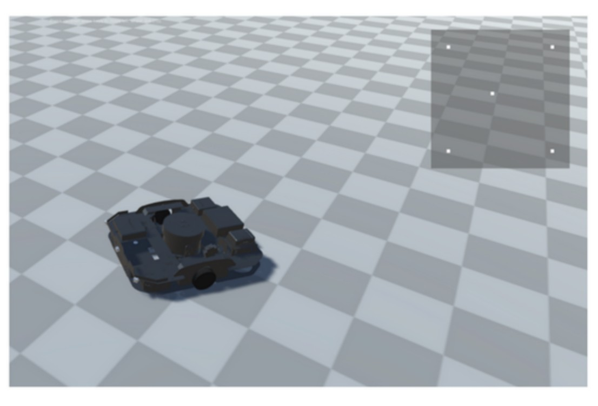

The problem
Testing prototypes is the core loop of robot development, and manufacturing a physical prototype for every iteration is expensive enough to slow that loop down. Testing in simulation is the usual answer, but the robotics team had looked at the existing simulation software and found it missing the things they specifically needed.
What I built
I joined the robotics team to close that gap. The simulator builds a 3D copy of a warehouse robot directly from the design files the team already maintained, and connects that copy to ROS, the same open-source robot operating system running on the real hardware. Because the simulated robot speaks to the same stack as the physical one, the team can put a design through its paces before committing to manufacturing it.

Key capabilities
- Model generation from URDF: builds the 3D robot automatically from a Unified Robotics Description Format file, so the simulated robot follows the design files rather than being modelled by hand and drifting out of date.
- Live ROS interface: the system connects to a running ROS instance, so the control software under test is the real thing rather than a stand-in.
- Full motor actuation: every motor on the robot can be driven, and the model can be controlled directly from the keyboard for hands-on testing.
- Object tracking with a mini-map: tracked objects are displayed in a map in the top-right corner, giving a view of what the robot has registered in its environment alongside what is actually there.

Why generating from URDF mattered
The decision that carried the most weight was building the robot from its URDF rather than modelling it in the simulator. A hand-built model is accurate exactly once. The moment the mechanical design changes, the simulation is quietly testing a robot that no longer exists, and nobody finds out until the physical prototype behaves differently. Reading the same description file the rest of the toolchain uses means the simulation follows the design automatically, and a new iteration is testable as soon as it is drawn.